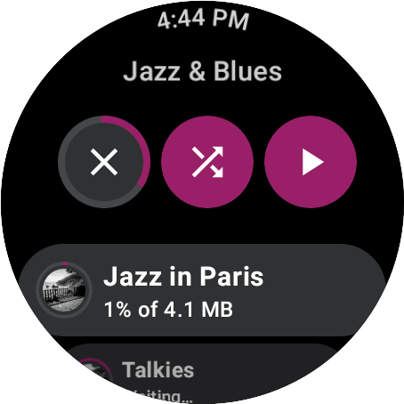
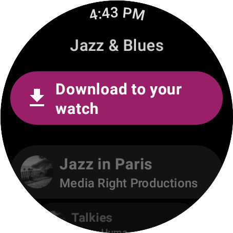

Media Data library¶
This library contains the implementation of the repositories defined in the media domain library, using Media3 and an internal database as data sources.
It also exposes its data sources classes so they can be used by your custom repositories.
MediaDownloadService¶
An implementation of Media3’s DownloadService that, in conjunction with auxiliary
classes, will monitor the state and progress of media downloads, and update the information in the
internal database.
Usage¶
-
Add your own implementation of the service, extending
MediaDownloadService; -
Add your service implementation to your app’s
AndroidManifest.xml:<service android:name="MediaDownloadServiceImpl" android:exported="false"> <intent-filter> <action android:name="com.google.android.exoplayer.downloadService.action.RESTART"/> <category android:name="android.intent.category.DEFAULT"/> </intent-filter> </service>
Media Toolkit implementation¶
DownloadManagerListener¶
The DownloadManagerListener is an implementation of listener for DownloadManager events which can also get notified of
DownloadService creation and destruction events.
This class persists information such as the id and the download status in the local database MediaDownloadLocalDataSource.
override fun onDownloadChanged(
downloadManager: DownloadManager,
download: Download,
finalException: Exception?
) {
coroutineScope.launch {
val mediaId = download.request.id
val status = MediaDownloadEntityStatusMapper.map(download.state)
if (status == MediaDownloadEntityStatus.Downloaded) {
mediaDownloadLocalDataSource.setDownloaded(mediaId)
} else {
mediaDownloadLocalDataSource.updateStatus(mediaId, status)
}
}
downloadProgressMonitor.start(downloadManager)
}
override fun onDownloadRemoved(downloadManager: DownloadManager, download: Download) {
coroutineScope.launch {
val mediaId = download.request.id
mediaDownloadLocalDataSource.delete(mediaId)
}
}
DownloadProgressMonitor¶
The DownloadProgressMonitor monitors the status of the download by polling the DownloadManager
and persists the progress in the local database MediaDownloadLocalDataSource.
private fun update(downloadManager: DownloadManager) {
coroutineScope.launch {
val downloads = mediaDownloadLocalDataSource.getAllDownloading()
if (downloads.isNotEmpty()) {
for (it in downloads) {
downloadManager.downloadIndex.getDownload(it.mediaId)?.let { download ->
mediaDownloadLocalDataSource.updateProgress(
mediaId = download.request.id,
progress = download.percentDownloaded
.coerceAtLeast(DOWNLOAD_PROGRESS_START),
size = download.contentLength
)
}
}
} else {
stop()
}
}
if (running) {
handler.removeCallbacksAndMessages(null)
handler.postDelayed({ update(downloadManager) }, UPDATE_INTERVAL_MILLIS)
}
}
UI Implementation¶
The PlaylistsDownloadScreen is composed by the MediaContent and the ButtonContent.
The MediaContent displays the content that is being downloaded or already downloaded. For content that is being downloaded,
we display the download progress for each track in place of the artist name in the secondaryLabel
val secondaryLabel = when (downloadMediaUiModel) {
is DownloadMediaUiModel.Downloading -> {
when (downloadMediaUiModel.progress) {
is DownloadMediaUiModel.Progress.Waiting -> stringResource(
id = R.string.horologist_playlist_download_download_progress_waiting
)
is DownloadMediaUiModel.Progress.InProgress -> when (downloadMediaUiModel.size) {
is DownloadMediaUiModel.Size.Known -> {
val size = Formatter.formatShortFileSize(
LocalContext.current,
downloadMediaUiModel.size.sizeInBytes
)
stringResource(
id = R.string.horologist_playlist_download_download_progress_known_size,
downloadMediaUiModel.progress.progress,
size
)
}
DownloadMediaUiModel.Size.Unknown -> stringResource(
id = R.string.horologist_playlist_download_download_progress_unknown_size,
downloadMediaUiModel.progress.progress
)
}
}
}
is DownloadMediaUiModel.Downloaded -> downloadMediaUiModel.artist
is DownloadMediaUiModel.NotDownloaded -> downloadMediaUiModel.artist
}
The ButtonContent displays either a download chip or three buttons to delete, shuffle and play the content. While content is being downloaded,
we show an animation on the first button on the left to track progress .
if (state.downloadMediaListState == PlaylistDownloadScreenState.Loaded.DownloadMediaListState.None) {
if (state.downloadsProgress is DownloadsProgress.InProgress) {
StandardChip(
label = stringResource(id = R.string.horologist_playlist_download_button_cancel),
onClick = { onCancelDownloadButtonClick(state.collectionModel) },
modifier = Modifier.padding(bottom = 16.dp),
icon = Icons.Default.Close
)
} else {
StandardChip(
label = stringResource(id = R.string.horologist_playlist_download_button_download),
onClick = { onDownloadButtonClick(state.collectionModel) },
modifier = Modifier.padding(bottom = 16.dp),
icon = Icons.Default.Download
)
}
} else {
Row(
modifier = Modifier
.padding(bottom = 16.dp)
.height(52.dp),
verticalAlignment = CenterVertically,
horizontalArrangement = Arrangement.spacedBy(6.dp, CenterHorizontally)
) {
FirstButton(
downloadMediaListState = state.downloadMediaListState,
downloadsProgress = state.downloadsProgress,
collectionModel = state.collectionModel,
onDownloadButtonClick = onDownloadButtonClick,
onCancelDownloadButtonClick = onCancelDownloadButtonClick,
onDownloadCompletedButtonClick = onDownloadCompletedButtonClick,
modifier = Modifier
.weight(weight = 0.3F, fill = false)
)
StandardButton(
imageVector = Icons.Default.Shuffle,
contentDescription = stringResource(id = R.string.horologist_playlist_download_button_shuffle_content_description),
onClick = { onShuffleButtonClick(state.collectionModel) },
modifier = Modifier
.weight(weight = 0.3F, fill = false)
)
StandardButton(
imageVector = Icons.Filled.PlayArrow,
contentDescription = stringResource(id = R.string.horologist_playlist_download_button_play_content_description),
onClick = { onPlayButtonClick(state.collectionModel) },
modifier = Modifier
.weight(weight = 0.3F, fill = false)
)
}
}
Result¶
Download screens:
 